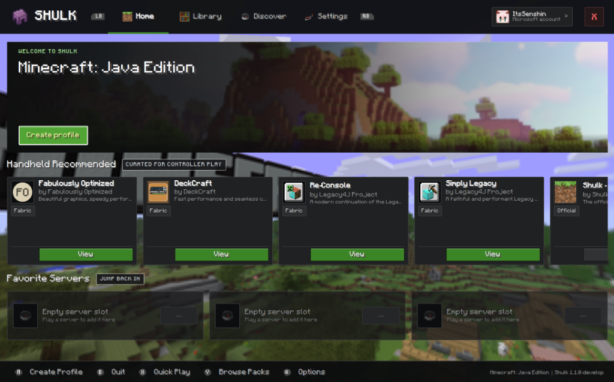
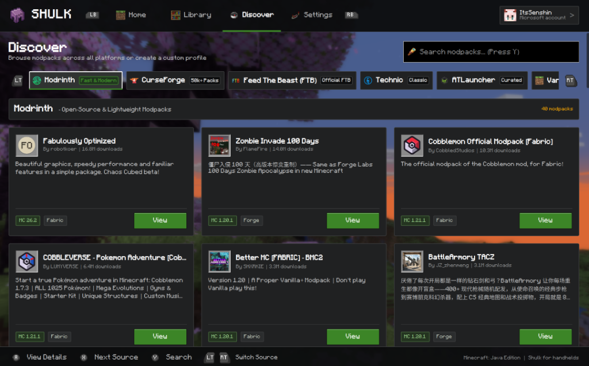

The Minecraft Java Launcher Built for Handhelds.
Designed specifically for Steam Deck, ROG Ally, Legion Go, SteamOS, Bazzite, and controller driven PCs. 100% gamepad navigation, 3D title panoramas, instant modpack discovery, and seamless single action launching.

Shulk v1.1.2 Home Dashboard • SteamOS / Handheld ModeEngineered for Consoles & Handhelds
Say goodbye to clunky desktop window launchers and cursor emulation.
100% Gamepad Navigation
Complete 60Hz Dpad and analog stick spatial navigation across every menu, setting, and dialog. Native glyph hints, bumper tab switching (LT and RT), and virtual keyboard integration.
Jump Back In Shelf
Recent multiplayer server shelf right on your home screen. Single action connect with live latency ping, player counts, and server banners without digging through nested menus.
Multi Platform Modpack Store
Search and install modpacks directly from Modrinth, CurseForge, FTB, Technic, and ATLauncher. Browse dependencies, screenshots, and descriptions with gamepad support.
3D Skin & Panorama Engine
Real time GPU 3D rotating cubemap panoramas from 10 Minecraft eras and classic Console Editions. Interactive 3D isometric skin inspection in account settings.
Instant Zero Freeze Loading
Decoupled multithreaded content engine. Modpack manifests, ZIP archives, and resource pack icons load asynchronously on background threads with 0ms UI freezing.
Dual Channel In App Updater
Check for updates, inspect release notes, and install new versions directly in Settings. Switch seamlessly between Stable and Development update channels.

Modpack Discovery • Modrinth, CurseForge, FTB & TechnicChoose Your Platform
Direct downloads powered by official GitHub releases with self contained dependencies.
 Bazzite & SteamOS
Bazzite & SteamOS
Self Contained Installer for SteamOS, Bazzite and Linux Handhelds
- Fully bundled runtime (800+ isolated libraries)
- One click
install.shand desktop icon setup - Automatically adds Shulk to Steam Game Mode
- Zero missing dependency errors on immutable OS
 Windows Handhelds & PC
Windows Handhelds & PC
Portable package for ROG Ally, Legion Go, and Windows Desktop
- Portable ZIP archive to extract anywhere and launch
- Automatic XInput and Xbox Controller detection
- Includes bundled 64 bit C++ runtime dependencies
- Armoury Crate and Legion Space launcher compatible
 Linux Portable (x86_64)
Linux Portable (x86_64)
Generic binary archive for Ubuntu, Fedora, Arch & openSUSE
- Lightweight portable distribution archive
- Compatible with custom system Qt 6 and SDL2
- Ideal for desktop workstations and custom distros
- Fast uncompressed execution
GitHub Source Code & Release Archive
Looking for older releases, changelogs, build instructions, or development previews?
Quick Installation
Get Shulk up and running on your device in under 60 seconds.
-
1
Switch to Desktop Mode & Download
On your Steam Deck, press the STEAM button, go to Power, and choose Switch to Desktop. Download the SteamOS Installer package.
-
2
Extract the Archive
Right click the downloaded installer archive in Dolphin and select Extract Archive Here.
-
3
Run the Installer
Double click
Install Shulk.desktop(or run./install.shin terminal). The installer sets up desktop shortcuts and automatically registers Shulk into your Steam library.tar -xzf Shulk-*-SteamOS-Bazzite-Installer.tar.gz && cd Shulk-Installer && ./install.sh -
4
Return to Game Mode and Play!
Double click Return to Gaming Mode on your desktop. Launch Shulk directly from your Non Steam Games category with full controller navigation!
-
1
Download the Windows ZIP
Download the Windows package using the download button above.
-
2
Extract to Desired Folder
Extract the ZIP contents into your games directory (for example,
C:\Games\Shulk\). -
3
Launch shulk.exe
Double click
shulk.exe. You can also add it to Steam, Armoury Crate, or Legion Space for one click launcher integration.
-
1
Extract the Archive
Extract the generic portable Linux tarball in your home or application directory:
tar -xzf Shulk-*-Linux-x86_64.tar.gz && cd Shulk -
2
Run the Launcher
Execute the native launcher binary:
./shulk